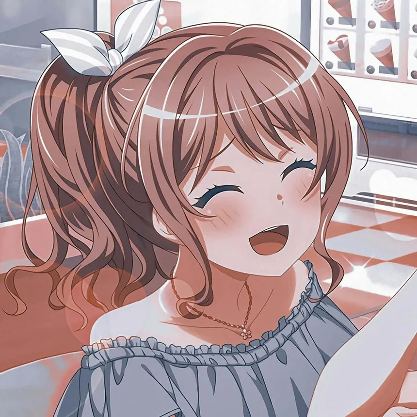
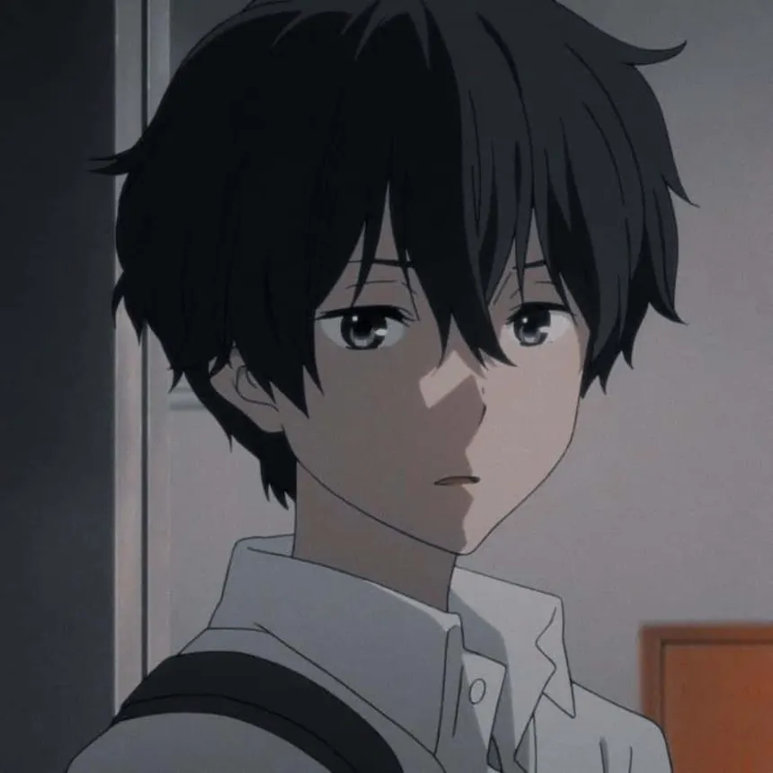
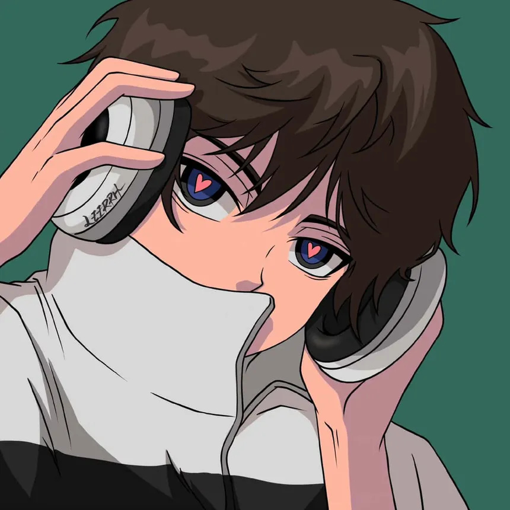
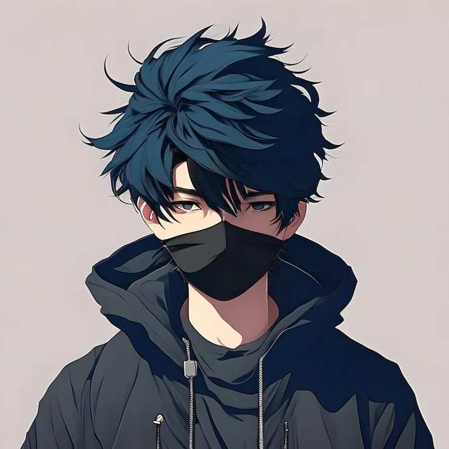

¿Quienes somos?
Un espacio creado por fanáticos del anime para fanáticos del anime. Descubre historias increíbles, personajes memorables y una comunidad que comparte tu misma pasión.

Tu portal para descubrir, compartir y vivir el mundo del anime.
Un espacio creado por fanáticos del anime para fanáticos del anime. Descubre historias increíbles, personajes memorables y una comunidad que comparte tu misma pasión.
AnimeStart nació de una idea sencilla: crear un lugar donde los amantes del anime pudieran reunirse para compartir recomendaciones, opiniones y experiencias sobre sus series favoritas.
Todo comenzó cuando un grupo de amigos coincidió en su pasión por las historias que transmiten emoción, aventura y enseñanzas a través del anime. Durante años intercambiamos recomendaciones, debatimos teorías, descubrimos nuevos personajes y compartimos momentos inolvidables gracias a este universo tan diverso.
Con el tiempo nos dimos cuenta de que muchas personas buscaban un sitio donde encontrar información clara sobre animes, curiosidades, noticias y recomendaciones para empezar nuevas series. Así nació AnimeStart, un proyecto creado con entusiasmo para conectar a fanáticos de todas las edades y niveles de experiencia.
Hoy seguimos creciendo con la misma motivación del primer día: compartir nuestra pasión por el anime y ayudar a que más personas descubran este increíble mundo lleno de imaginación y creatividad.
Brindar contenido entretenido, informativo y accesible sobre el anime, creando una comunidad donde los fanáticos puedan aprender, compartir y descubrir nuevas historias que inspiren y entretengan.
Convertirnos en una de las comunidades de anime más reconocidas por su creatividad, respeto y pasión, siendo un punto de encuentro para quienes desean explorar este fascinante universo.
Porque creemos que cada anime tiene una historia capaz de inspirar, emocionar o enseñar algo nuevo. Nuestro objetivo es facilitar el acceso a recomendaciones, noticias y contenido interesante para que cada visita sea una nueva aventura.
AnimeStart no es solo una página web; es una comunidad donde los fanáticos pueden sentirse identificados, compartir sus gustos y descubrir nuevas experiencias dentro del mundo del anime.

Desarrollador Web

Desarrollador Web

Desarrollador Web

Desarrollador Web

Desarrollador Web

Desarrollador Web

Desarrollador Web